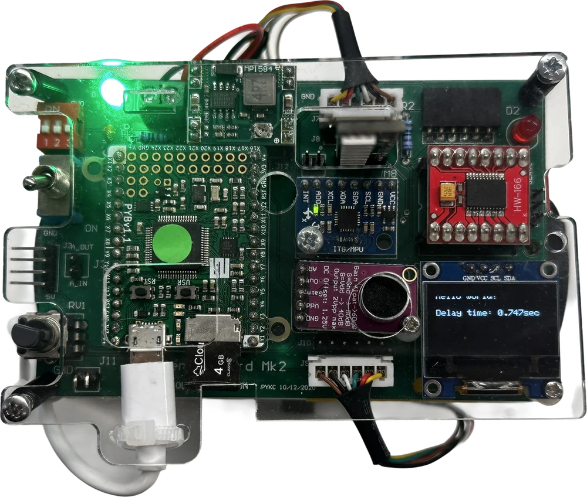

Balancing Segway
A two-wheeled robot that balances itself with a PID loop. Built in MicroPython on the PyBench board, it reads its tilt 200 times a second and drives two motors to stay upright. We made it for Electronics 2, taught by Professor Peter Cheung, who also designed the PyBench board.


The robot measures its tilt with an IMU, which has a gyroscope and an accelerometer. The gyro is smooth but slowly drifts. The accelerometer doesn’t drift, but it’s noisy. A complementary filter blends the two, taking 95% from the gyro and 5% from the accelerometer, which gives a tilt reading that’s both smooth and steady.
That reading goes into a PID controller, which compares the robot’s angle with upright and drives both wheels to close the gap:
u = Kp × error + Ki × integral − Kd × rate
Proportional
Multiplies the error by a gain, Kp, so the bigger the error, the bigger the push. On its own it usually leaves a small steady offset.
Too much P and it oscillates.
Integral
Adds up the error over time and multiplies it by Ki. If P alone never quite reaches the target, the integral keeps building until it does.
Too much I and it winds up and overshoots.
Derivative
Looks at how fast the error is changing and multiplies that by Kd, which eases off as the robot approaches the target. We take the rate straight from the gyroscope, because dividing noisy IMU readings by a tiny time step would amplify the noise.
Too much D and it gets sensitive to noise.
Tuning was the hard part. Each gain fixes one problem and causes another, so we spent a long time hanging the robot from elastic cord, watching how it failed and working out which term was to blame. We changed one value at a time until it finally stood up on its own.